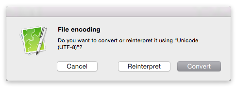

Characters aren't displayed correctly
Characters can be garbled if CotEditor fails to detect the file's encoding correctly. In such cases, change the character encoding as described below:
- Choose Format > File Encoding, and select an encoding from the list.
- When a dialog appears, click Reinterpret.

The behavior of each button in this dialog is as follows:
- Reinterpret
- Reopens the file with the new encoding.
- Convert
- Converts the text from the current encoding to the new one.
- Cancel
- Cancels the operation. The document is left unmodified.
See also